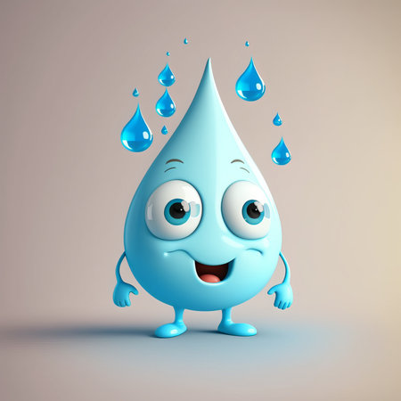
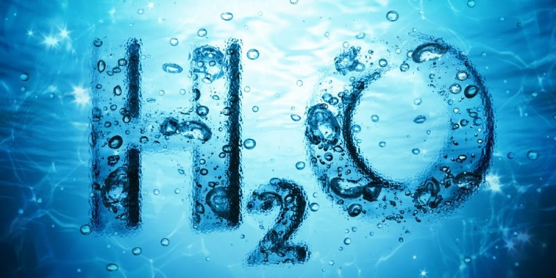

DEFINICION DEL AGUA
El agua es una sustancia que se compone por dos átomos de hidrógeno y un átomo de oxígeno (H2O) y se puede encontrar en estado sólido (hielo), gaseoso (vapor) y líquido (agua). Las propiedades físicas y químicas del agua son muy importantes para la supervivencia de los ecosistemas.

